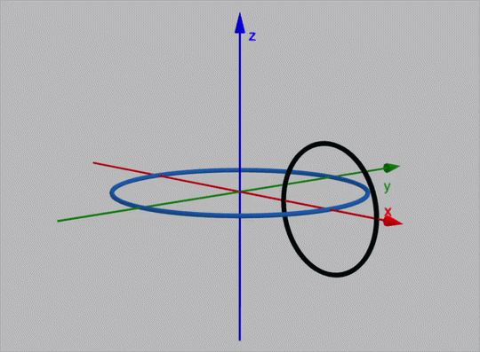
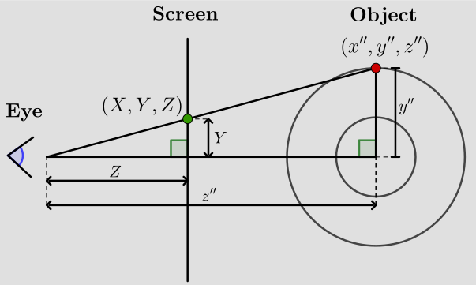

The animation represents a three-dimensional torus using only ASCII characters. The main steps to create this effect are as follows:
This is a p5.js version of the Have a donut (ASCII 3D donut in C) created in 2006 by the amazing Andy Sloane.
A torus can be constructed by taking a circle of radius \(R_1\) and moving its centre around a larger circle of radius \(R_2\).

Using two parameters \(\theta\) and \(\phi\), the torus is parametrized by
\[ \begin{aligned} x &= (R_2 + R_1\cos\theta)\cos\phi,\\ y &= (R_2 + R_1\cos\theta)\sin\phi,\\ z &= R_1\sin\theta, \end{aligned} \]where \[ 0\leq\theta\lt 2\pi, \qquad 0\leq\phi\lt 2\pi. \]
Here \(R_1\) controls the thickness of the tube, while \(R_2\) controls the size of the central ring.
The torus is rotated around the \(x\)-axis and then around the \(z\)-axis. These rotations can be written either component-by-component or, equivalently, as matrix multiplications.
A rotation around the \(x\)-axis is given by
\[ \begin{aligned} x' &= x,\\ y' &= y\cos A-z\sin A,\\ z' &= y\sin A+z\cos A. \end{aligned} \]In matrix form, this is
\[ \begin{pmatrix} x'\\ y'\\ z' \end{pmatrix} = \begin{pmatrix} 1 & 0 & 0\\ 0 & \cos A & -\sin A\\ 0 & \sin A & \cos A \end{pmatrix} \begin{pmatrix} x\\ y\\ z \end{pmatrix}. \]A rotation around the \(z\)-axis is
\[ \begin{aligned} x'' &= x'\cos B-y'\sin B,\\ y'' &= x'\sin B+y'\cos B,\\ z'' &= z'. \end{aligned} \]In matrix form,
\[ \begin{pmatrix} x''\\ y''\\ z'' \end{pmatrix} = \begin{pmatrix} \cos B & -\sin B & 0\\ \sin B & \cos B & 0\\ 0 & 0 & 1 \end{pmatrix} \begin{pmatrix} x'\\ y'\\ z' \end{pmatrix}. \]Therefore, the two rotations can also be combined into a single matrix multiplication:
\[ \begin{pmatrix} x''\\ y''\\ z'' \end{pmatrix} = \begin{pmatrix} \cos B & -\sin B & 0\\ \sin B & \cos B & 0\\ 0 & 0 & 1 \end{pmatrix} \begin{pmatrix} 1 & 0 & 0\\ 0 & \cos A & -\sin A\\ 0 & \sin A & \cos A \end{pmatrix} \begin{pmatrix} x\\ y\\ z \end{pmatrix}. \]The angles \(A\) and \(B\) are increased slightly every frame, producing the animation.
To obtain the perspective projection formulas, consider the geometry shown in the diagram below.

Let the eye be at the origin, and let the projection screen be a distance \(Z\) from the eye. A point of the object has coordinates \[\left(x'', y'', z''\right).\]
We first derive the expression for the projected vertical coordinate \(Y\).
From the two right triangles in the diagram, notice that they are similar. Therefore, \[ \frac{Y}{Z}= \frac{y''}{z''} \] Hence, \[ Y = Z\frac{y'}{z''} \] If we denote the distance from the eye to the screen by the constant \(K_1\), this becomes \[Y = K_1\frac{y''}{z''}.\] The same argument applied horizontally gives the corresponding expression for the \(X\)-coordinate, \[ X = K_1\frac{x''}{z''}. \] Thus, after rotation, the perspective projection can be written in the form \[ \left(X,Y\right) = \left(K_1\frac{x''}{z''},K_1\frac{y''}{z''}\right) \] The important feature is the division by \(z''\): points that are farther from the eye appear smaller on the screen, which produces the characteristic perspective effect.
To make the torus look three-dimensional, we calculate a normal vector at every point on its surface:
\[ \mathbf n = \begin{pmatrix} \cos\theta\cos\phi\\ \cos\theta\sin\phi\\ \sin\theta \end{pmatrix}. \]With this expression the normal is rotated together with the surface.
We then compare the normal with the direction of the light using the dot product:
\[ L = \max\left( 0, \frac{\mathbf n\cdot\mathbf l} {\|\mathbf l\|} \right). \]In the animation the light direction is approximately
\[ \mathbf l=(0,-1,1). \]If the normal points towards the light, the dot product is large and the surface is bright. If it points away from the light, the value is close to zero.
Several points on the torus can project onto the same position on the ASCII grid. We therefore keep track of the depth of the closest visible point.
\[ z_{\text{new}}>z_{\text{buffer}}. \]When this condition is satisfied, the new point replaces the previous one. This is what allows the front of the torus to hide the back.
Finally, the lighting value \(L\), approximately between \(0\) and \(1\), is converted into an index in the character string
.,-~:;=!*#$@
Darker parts of the surface use characters near the beginning of the string, while brighter parts use characters near the end.
Parametric surface → Rotation → Perspective projection
→ Lighting → Depth test → ASCII character
Made with ♥ by JCPC